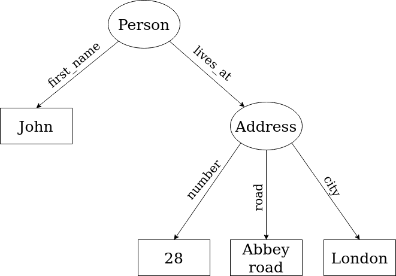

2. Indexing Metadata
Contents
2. Indexing Metadata¶
a. What is a metadata ?¶
Formaly, metadata describe various aspect of a document: its content, its origin, etc. If the term metadata is quite recent (it was coined by Bagley in 1969), it is nothing new. In fact most of documents, whether ancients or recents, are often accompanied by additional information like a title or the author. Metadata are often as important as the content of the document they describe.
Archival is the first field to have massively used metadata. Catalogs of libraries are full of descriptive metadata, easing the retrieval of information. The hierarchical aspects of metadata allows to easily group similar documents together. It is paramount for researchers, especially in social sciences, to identify relevant and consistant research corpora.
There are different types of metadata, with different uses.
1. Descriptive metadata: As we already saw, they allow to more easily retrieve particular documents according to the value of a field (the author of a document, its title, its date of publication, etc.). Thus, they often allow user to filter a list of results to quickly identify relevant documents. Furthermore, the generic aspect of metadata allows for searching in heterogeneous sets of documents (photos, manuscripts, books, videos, etc.).
2. Structural metadata: As their name suggests, those metadata can describe the structure of an individual document or the relations exising between multiple documents. They are mainly used to ease the navigation inside a document by listing the page numbers or the reading order. As an example, a theater play will often states which character is speaking. If a system is able to take this into account, the retrieval of information will be greatly improved. Those metadata could also help in linking documents together, for example by stating the document of origin of a particular phtograph.
3. Administrative metadata: Also called technical metadata, they are needed for document management (access, diffusion, archival, etc.). For example, in the case of images or videos, it is often necessary to know the format of a file, its resolution, the algorithm used to encode the data, etc. Thes metadata are also essential for long-term archival. Indeed, formats and algorithms evolve constantly and it is often difficult to open old files which format has been replaced. A partial solution to this is to use open formats, publicly described.
Other matadata are used for rights access management. Thus, you can identify the intellectual property of documents (Copyright, CreativeCommons, etc.) or you can state which user or group of user has read/write access on particular documents.
b. History of metadata management¶
Link to IO6 - 1.2
c. Metadata representation¶
Metadata can be expressed in various ways and the main distinction is between internal and external metadata. As their names suggest, internal metadata are part of the document they describe or are intrinsically linked to it, especially regarding digital documents. For example, the file size of a document is a metadata that is not really described anywhere but is always associated with the document. In the same way, the duration of a video or its encoding are part of itself. Antoher example are web pages. Written using HTML, they often contain special markup that describe metadata like the title of the page.
On the other hand, external metadata are stored separately than the document they describe. For this reason it is necessary to be able to identify every documents individually. We could use its location on the filesystem or a database identifier but the most preffered solution is the use of URI (Universal Resource Identifier). External metadata are essential when it comes to describing relation between different documents.
When it comes to interoperability, it is essential that metadata follow a normalize scheme of representation. Thus, if two systems index different documents but use a common representation scheme, they will easily be able to share information. These metadata schemes define information in a normalize way, no matter the nature of the document described. Formally, a metadata scheme associates a property with a unique URI, a description and a human-readable label. These information are often expressed using the RDF model (Resource Description Framework). Using this model, metadata are represented in the form of a graph. Formally, a RDF model stores a set of triplets (subject, predicate, object) which express a semantic statement. The subject is the resource to describe, the predicate defines the information we want to describe and the object is the value of this information for the resource. Here is an example of what such a RDF graph could look like, and its associated scheme. 
Classes
Label |
URI |
Description |
|---|---|---|
Person |
represents an individual |
|
Address |
represents a postal address |
Predicates
Label |
URI |
Subject |
Object |
|---|---|---|---|
lives at |
Person |
Address |
|
first name |
Person |
string |
|
number |
Address |
integer |
|
road |
Address |
string |
|
city |
Address |
string |
Standardized metadata schemes contains the same kind of information as this fictive scheme (identifiers in the form of a URI, labels and descriptions). A well known example of such a scheme is Dublin Core (http://www.dublincore.org/documents/dcmi-terms/). This scheme allows the description of resources on the Web. It defines classes like Agent, BibliographicResource, Text, Image, etc. Those classes can be linked together with the help of various properties.